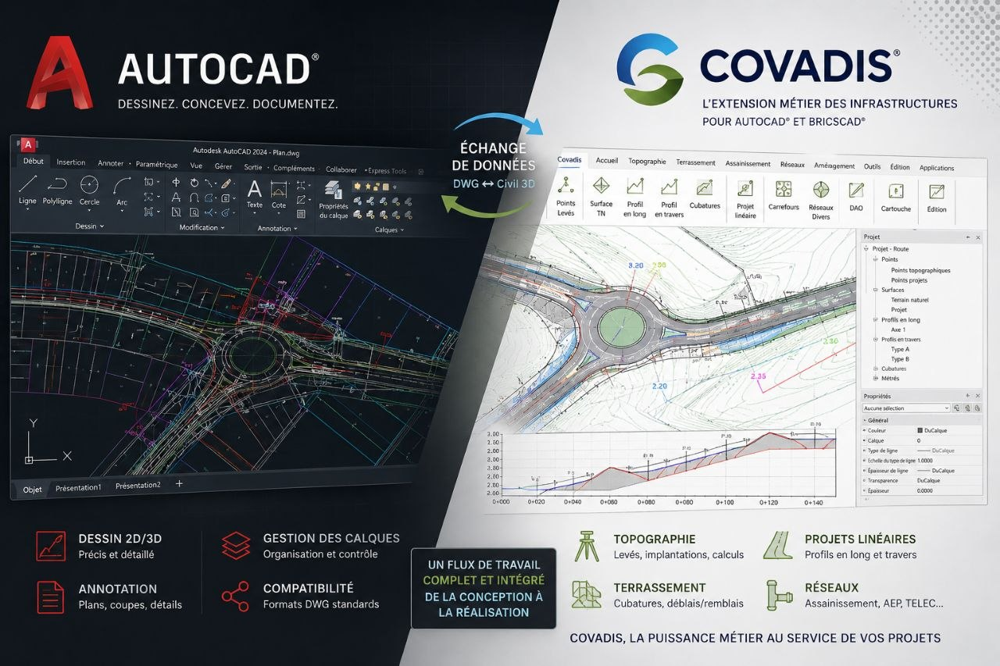
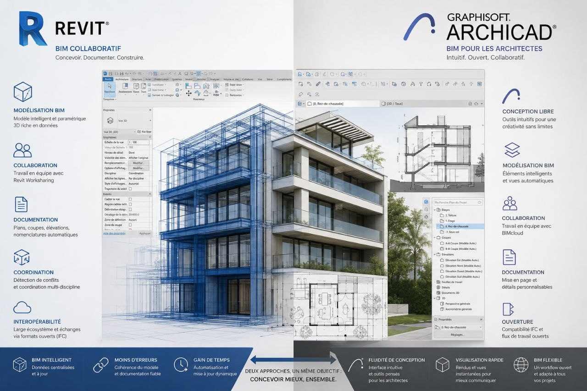
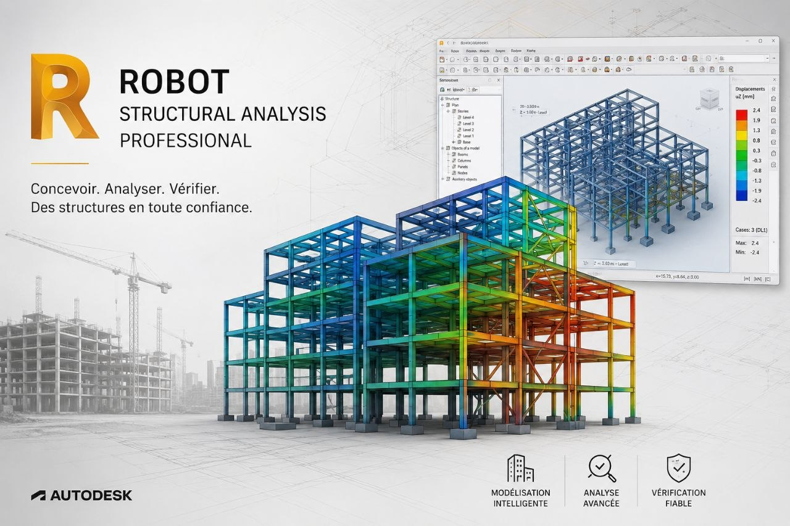
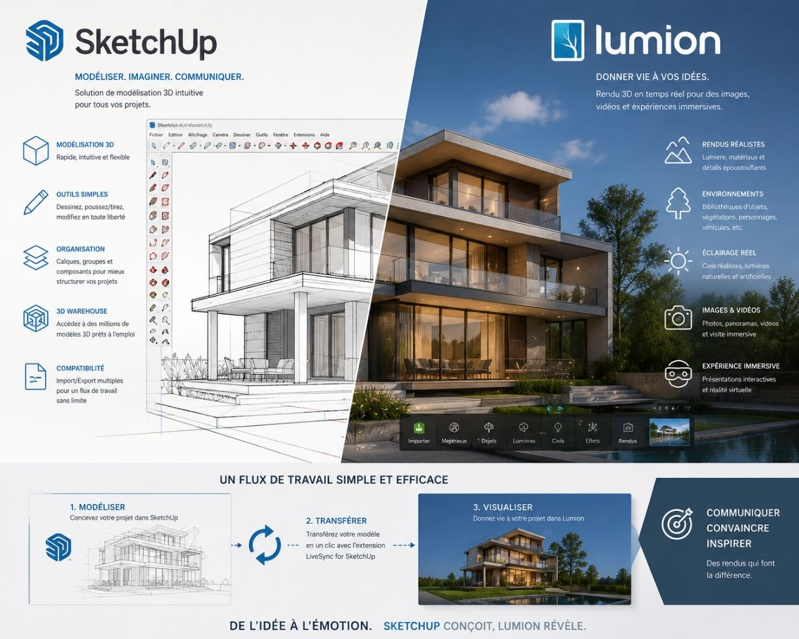
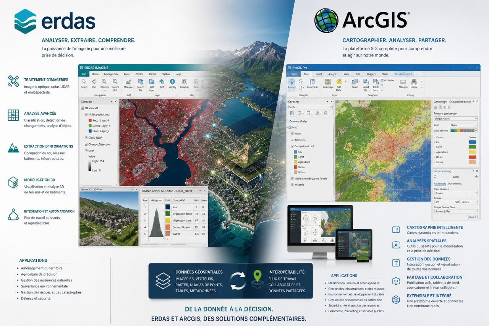

Installations robustes de vos environnements d'ingénierie professionnelle.

Idéal pour la conception de plans et calculs topographiques.

Modélisation architecturale et maquettes numériques (BIM).

Calcul de structures et dimensionnement de béton/charpente.

Création rapide de rendus 3D ultra-réalistes.

Traitement d'images satellites et systèmes d'information géographique.